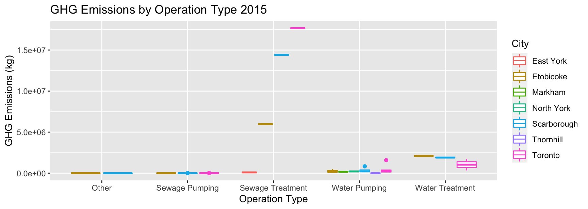
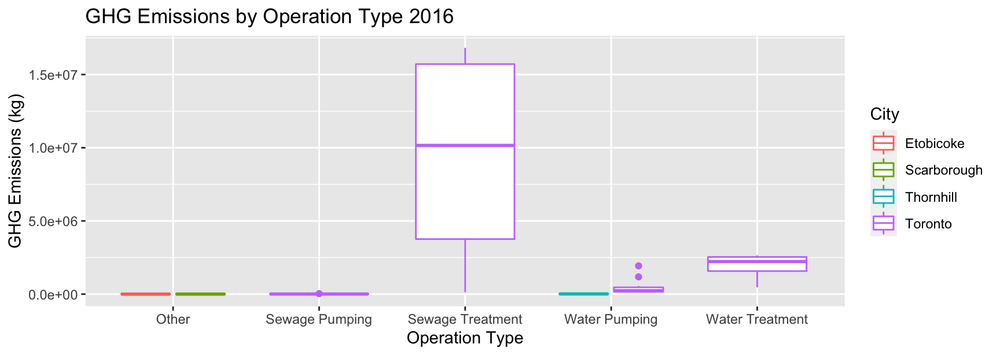
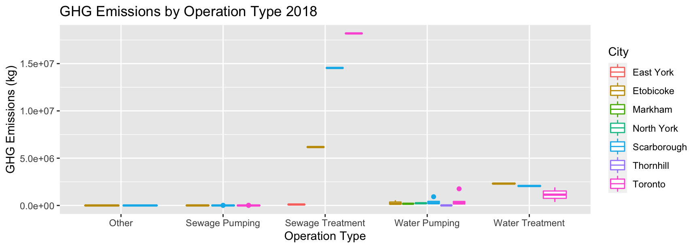

Vizualizing Annual Energy Consumption in Toronto
A Look Into How Energy Consumption has Changed from 2015 to 2018
Introduction
Over the years many have seen the consequences of climate change on the weather, their health, storms, and rising sea levels.
The Green Energy Act’s Regulation 397/11 requires the completion of an Energy Conservation and Demand Management (ECDM) Plan every 5 years. The City of Toronto completed the first edition of the ECDM plan, which was approved by the Council, in 2014. Facilities have been selected for energy retrofit work based on the energy savings they make and greenhouse gas reduction potential. The City aims to build on its previous energy efficiency achievements using the ECDM plan as a agenda for the identification, implementation and verification of future energy saving projects.
I will explore GHG emissions in Toronto between the years 2015 and 2018 with respect to the operation type and the city. Through exploration of this data set, it can offer insights on ways to reduce GHG emissions by further analyzing which operations produce the most GHG emissions and why.
Data
This assignment uses a data set from Open Data Toronto called Annual Energy Consumption. This data set contains columns for the energy consumption of individual buildings in Toronto that are required by Ontario Regulation 397/11 and the Green Energy Act to report their GHG emissions.
This data set contains 1311 observations with 36 variables with information about energy consumption for different operations in Toronto. This report will focus on operation name, operation type, city, total floor area, annual flow (ML), and GHG emissions (kg). The data set has been cleaned for the 4 files from 2015 to 2018 using R [@citeR] and R packages: “tidyverse”, “dplyr” and “janitor”.
Visualizing the Data and The Implications



As seen in Figures 1 to 4, there are drastic changes in GHG emissions by operation type and city from 2015 to 2018. From 2015 to 2016, GHG emissions were the most in Toronto for the sewage treatment operation, and the second highest was Toronto for the water treatment operation. Both 2015 and 2016 had these results.
In 2017, the graph changes drastically. It can be observed that Toronto still had some of the highest GHG emissions for the sewage treatment operation but not nearly as much as it was before. The same can be seen in 2018.
Next Steps
After analyzing this data set, it can be observed that the GHG emissions are still very high throughout the GTA and there should be efforts to reduce these emissions. There should be further analysis done on the sewage and water treatment operations to find out what has been causing the high GHG emissions for these operations.